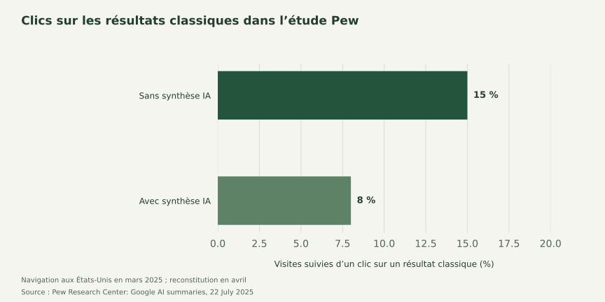

Lorsqu’un client demande à une IA quelle entreprise choisir, votre site peut servir de source à une réponse avant de devenir une destination. Le prospect compare des prestataires dans une synthèse, consulte un avis, examine une offre puis seulement ouvre votre formulaire. Ce parcours pose une question utile : les personnes et les systèmes de recherche comprennent-ils précisément ce que propose votre entreprise ?
L’optimisation pour la recherche assistée par IA commence par les qualités qui rendent un site utile à ses lecteurs : informations accessibles, services clairs, preuves concrètes et fonctionnement technique fiable. Il faut renforcer ces bases tout en mesurant un parcours qui peut générer moins de visites directes pour certaines recherches.
Ce guide explique les résultats de recherche disponibles, les conditions décrites par Google pour ses fonctions IA et la préparation d’une stratégie SEO fondée sur des éléments vérifiables. Les recommandations pratiques constituent notre analyse. Aucune méthode ne garantit un classement, une citation par une IA ou un résultat commercial déterminé.
Dans une analyse publiée en juillet 2025, Pew Research Center examine la navigation de 900 adultes américains. Les clics vers les résultats traditionnels apparaissent dans 8 % des visites avec une synthèse IA, contre 15 % sans synthèse. Un clic sur une source citée à l’intérieur de la synthèse intervient dans 1 % des visites concernées.

Navigation aux États-Unis en mars 2025 ; reconstitution en avril. 900 adultes américains ; 68 879 recherches Google uniques. Résultats reconstitués du 7 au 17 avril 2025. Comparaison observationnelle : elle ne prouve pas une perte causale de trafic ni un effet sur les revenus d’une entreprise. Consulter la source et sa méthodologie.
| Groupe ou objectif | Valeur |
|---|---|
| Sans synthèse IA | 15 % |
| Avec synthèse IA | 8 % |
Les données couvrent la navigation de mars 2025 et 68 879 recherches Google uniques. Pew a reconstitué les résultats avec un service tiers entre le 7 et le 17 avril. Ils peuvent évoluer entre observation et reconstitution. Cette comparaison observationnelle porte sur cet échantillon et cette période ; elle ne prouve pas qu’une synthèse cause la variation de trafic ou de revenu d’une entreprise.
La réponse pertinente consiste à mesurer et adapter. Examinez les requêtes qui produisent des visites utiles, les pages qui soutiennent une décision et les canaux qui aboutissent à des demandes. Une comparaison historique explique une inquiétude du marché, sans remplacer les données de votre propre site.
Les AI Overviews de Google, les moteurs conversationnels, les recommandations sociales, les annuaires et les résultats classiques récupèrent et affichent les informations différemment. N’assimilez pas toutes les visites issues d’un domaine associé à l’IA au même phénomène. La documentation d’un fournisseur ne décrit pas nécessairement tous les autres.
Cartographiez les chemins utiles à l’entreprise. Un service local peut dépendre des recherches géographiques et des recommandations. Un éditeur de logiciel peut recevoir des comparaisons, des consultations de documentation et des recherches de marque. Un commerçant doit expliquer disponibilité, livraison et catégories de manière fiable.
Cette carte oriente l’investissement éditorial. Un article général accompagne une première recherche, une page de service répond à la question commerciale et une étude de cas apporte des preuves pour une présélection. La page de contact doit faciliter la suite au moment où la personne souhaite échanger.
Utilisez le vocabulaire SEO établi lorsqu’il aide l’équipe : intention de recherche, technique, maillage interne, données structurées, impressions, clics et conversions. Des expressions récentes comme « optimisation pour les moteurs génératifs » désignent un sujet d’étude, mais doivent conduire à des travaux observables. Un acronyme ne dispense pas d’informations claires et d’un service fiable.
La documentation de Google sur les fonctions IA indique que les pratiques SEO existantes restent pertinentes et qu’aucune exigence technique supplémentaire ni optimisation spéciale n’est nécessaire pour l’éligibilité. La page doit être indexée et autorisée à apparaître avec un extrait. L’éligibilité ne garantit pas l’inclusion.
Cette précision change le point de départ d’un projet de visibilité IA. Avant de commander un nouveau format, vérifiez que les pages importantes peuvent être explorées, présentent un contenu utile et communiquent leur objet. Améliorez ensuite les informations susceptibles de répondre à une question pertinente.
Examinez un échantillon représentatif, au-delà de l’accueil : modèles de produits, services, articles et pages locales peuvent utiliser des rendus ou réglages d’indexation différents. Une erreur commune à un modèle peut affecter de nombreuses URL alors qu’un contrôle rapide de la première page semble satisfaisant.
Gardez également le résultat recherché en vue. L’entreprise veut des découvertes qualifiées et des actions utiles. Une mention dans une réponse peut avoir de la valeur, mais reste un signal parmi d’autres. Ne remplacez pas toutes les mesures existantes par un score de visibilité IA dont personne ne sait expliquer l’échantillonnage ou le calcul.
Une page de service doit aider le prospect à comprendre le problème traité, les entreprises concernées, les prestations comprises et la prochaine étape. Des affirmations générales sur l’innovation ou l’excellence laissent le lecteur et le chercheur sans éléments précis pour prendre une décision.
Partez de la tâche. Pour un portail client, décrivez les utilisateurs, documents, validations et intégrations qui structurent habituellement le projet. Expliquez ce que le cadrage examinerait et ce qu’une première version pourrait inclure. Présentez les exemples comme tels, sans en faire des promesses applicables à tous les projets.
Traitez les contraintes de décision : outils existants, comptes, hébergement, accessibilité, reprise de données et accompagnement. Publier un tarif fixe pour chaque situation n’est pas indispensable pour expliquer les facteurs qui font varier le périmètre et le coût.
Proposez une action ciblée. Une demande utile recueille le processus actuel, les personnes et le résultat attendu. Elle prépare un meilleur premier échange qu’une invitation générale à contacter un expert. Nos services d’applications métier offrent un point d’entrée pour examiner ces besoins.
Les preuves peuvent prendre la forme d’un produit accessible, d’une description de projet, d’une mise en œuvre documentée, d’une qualification ou d’un témoignage autorisé. Elles doivent soutenir l’affirmation précise. Une capture montre une interface ; elle ne prouve pas à elle seule une progression du chiffre d’affaires.
Pour chaque réalisation, décrivez le problème initial, la contribution, le comportement livré et les limites de divulgation. Si vous disposez de résultats mesurés, précisez période, référence, méthode et contexte. Sinon, expliquez le résultat fonctionnel sans inventer un pourcentage pour renforcer le récit.
Employez des noms cohérents pour l’entreprise, ses personnes, services et produits. Alignez coordonnées et profils officiels. Les lecteurs peuvent ainsi confirmer qu’ils consultent la bonne organisation, et les informations dispersées dans les annuaires ou réseaux deviennent moins ambiguës.
Réexaminez les anciennes affirmations lorsque l’activité évolue. Un produit déplacé, un service arrêté ou une démonstration cassée affaiblit une page autrement bien rédigée. Les preuves exigent une maintenance : quelqu’un doit vérifier les liens et confirmer que le récit décrit toujours ce que le visiteur peut consulter.
Les recommandations de Google sur les contenus utiles encouragent une réponse satisfaisante pour le public visé. Ce principe aide à déterminer le périmètre. La longueur doit suivre les informations nécessaires pour expliquer, montrer le raisonnement et soutenir une décision.
Un article technique destiné aux entreprises peut progresser de la définition aux preuves, puis aux choix de mise en œuvre, exemples et prochaines étapes. Chaque partie doit apporter quelque chose. Répéter un mot-clé ou reformuler l’introduction ne rend pas un long guide plus informatif.
Avant de rédiger, créez une trace des recherches. Distinguez documentation officielle, étude originale, annonce fournisseur et analyse personnelle de l’organisation. Notez la date et l’affirmation précise soutenue par chaque source. Vous éviterez de présenter une promesse commerciale comme une performance indépendamment démontrée.
Utilisez les expressions voisines lorsqu’elles servent l’explication. Un guide de recherche IA abordera naturellement trafic organique, intention, données structurées et parcours clients. Il n’a pas besoin d’un paragraphe maladroit contenant toutes les suggestions d’un outil. La répartition des mots-clés suit une couverture cohérente du sujet et le vocabulaire des lecteurs.
L’introduction de Google aux données structurées explique comment une information explicite exploitable par machine aide à comprendre une page. Le balisage doit correspondre au contenu visible et respecter les règles de la fonction concernée. Un balisage valide ne garantit pas un résultat enrichi.
Pour un blog, les propriétés utiles décrivent notamment l’article, l’auteur, l’image, la publication et l’URL canonique. Sur les autres pages, choisissez les types et propriétés qui représentent réellement le contenu. Une prestation ne devient pas un produit simplement parce qu’un modèle de balisage rend cette option facile.
Vérifiez ensemble la page rendue et ses métadonnées. Un nouveau titre doit se retrouver dans le balisage. Une image déplacée nécessite une URL absolue à jour. Un profil d’auteur doit apporter des informations utiles à un lecteur humain, au-delà de sa présence dans un objet de données.
N’ajoutez pas d’avis fabriqués, de récompenses non justifiées ni de promesses cachées. La couche structurée doit clarifier la page sans raconter une histoire plus flatteuse que le contenu vérifiable. Intégrez sa validation à la publication pour conserver une présentation cohérente lorsque le site se développe.
Le maillage interne aide à passer d’une question à une explication, un exemple puis un service pertinent. Ajoutez un lien lorsque sa destination apporte un contexte utile. Un guide de performance peut renvoyer vers l’exploitation cloud au moment d’aborder l’hébergement, puis vers une prestation lorsque le lecteur cherche de l’aide.
Préférez une ancre descriptive. « Hébergement cloud et reprise » renseigne davantage que « cliquez ici ». Gardez des phrases lisibles et n’insérez pas plusieurs destinations sans rapport dans chaque paragraphe. Un parcours ciblé sert souvent mieux le visiteur qu’une page saturée de liens.
Créez aussi des liens entrants vers les nouveaux contenus depuis les espaces déjà consultés. L’index du journal en constitue un ; des articles voisins et pages de service peuvent en fournir d’autres lorsque le périmètre le permet. Les guides reliés développent une décision plus large sans obliger une page à expliquer tous les sujets voisins.
Dans cette série, les guides du choix logiciel, de l’accessibilité et de la performance approfondissent différentes parties d’un plan d’amélioration. Leurs liens possèdent une fonction éditoriale explicite, au-delà de l’augmentation d’un compteur.
Contrôlez les statuts HTTP, redirections, URL canoniques, directives d’indexation, accès des robots et contenu envoyé au navigateur. Une excellente rédaction peut accompagner une canonique erronée ou une réponse en échec. Résolvez ces défauts avant d’attribuer chaque changement de visibilité au contenu.
La documentation robots.txt de Google distingue le contrôle de l’exploration de l’exclusion de l’index. Bloquer une URL n’empêche pas de manière fiable son apparition dans les résultats. Utilisez des contrôles d’accès pour la confidentialité et les consignes appropriées pour une décision d’indexation.
Examinez attentivement les modèles dépendant de JavaScript. Confirmez que contenus et liens importants deviennent disponibles dans la page rendue et que les visiteurs savent naviguer. Une page statique et une application complexe demandent des diagnostics différents, mais doivent toutes deux rendre leur information clairement accessible.
Conservez un historique des grandes livraisons. Après une refonte, comparez anciennes et nouvelles URL, titres, redirections, contenus et réglages. Plusieurs changements simultanés compliquent l’identification des causes. Un audit organisé peut trouver un défaut concret plutôt que provoquer une réécriture générale à partir d’une théorie non vérifiée.
Search Console décrit impressions, clics, requêtes et pages d’entrée. Un outil d’analyse décrit les événements après l’arrivée. Google explique les écarts entre Search Console et Analytics : événements mesurés, traitements et définitions diffèrent. Les deux sources répondent à des questions complémentaires.
Préparez un rapport qui respecte ces distinctions. Suivez séparément visibilité, visites qualifiées, demandes complétées et suites commerciales utiles. Une entreprise peut recevoir moins de visites avec de meilleurs prospects, ou davantage de visites qui débouchent rarement sur une conversation pertinente.
La documentation des fonctions IA de Google indique aussi que les données concernées figurent dans les rapports globaux de recherche web. N’attribuez pas précisément une visite aux AI Overviews à partir d’un rapport qui ne le permet pas. Lorsqu’une source fournit des informations d’origine, précisez leurs limites et n’extrapolez pas au-delà de l’échantillon.
Lorsque cela convient, ajoutez une question simple à la prise de contact : comment le client a-t-il découvert l’entreprise ? La déclaration comporte des limites, mais révèle parfois des chemins absents de la mesure technique. Associez les deux. Un rapport crédible montre l’incertitude au lieu de donner à chaque client une attribution artificiellement précise.
Choisissez un problème précis avant de modifier la page. Les visiteurs comprennent peut-être la prestation sans savoir si elle convient à leurs outils. L’hypothèse pourrait être qu’une explication plus claire des intégrations améliore la qualification des demandes. Définissez les éléments qui soutiendraient cette hypothèse avant de publier.
Notez les URL, dates et contenus modifiés. Comparez une période adaptée en tenant compte de la saison, des campagnes et des autres changements. Un petit site peut manquer de volume pour une conclusion statistique solide. La qualité des demandes et les retours utilisateurs peuvent néanmoins guider l’itération.
N’attribuez pas chaque mouvement à la dernière modification. La demande, les concurrents, l’indexation et les systèmes de classement évoluent aussi. Une interprétation utile décrit l’observation et les autres explications plausibles. Elle soutient de meilleures décisions qu’une promesse de progression garantie grâce à un intertitre.
Favorisez les interventions ciblées : clarifier un service, réparer un parcours interne ou compléter une étude de cas. Ces changements servent directement les visiteurs, même si l’évaluation SEO demande du temps. Le référencement devient une pratique éditoriale et produit continue, plutôt qu’une succession de tentatives pour satisfaire un score opaque.
Listez les prestations que l’entreprise souhaite vendre et les questions des prospects avant achat. Associez chaque question importante à une page. Notez les endroits où le site reste général ou envoie vers un profil personnel sans rapport avec le contact commercial attendu.
Examinez ensuite ces pages : chargement, identité cohérente et prochaine action utile. Parcourez la demande sur mobile. Un investissement éditorial perd de sa valeur si le visiteur ne peut pas envoyer son message ou comprendre qui lui répondra.
Construisez un groupe limité de ressources substantielles autour des décisions réelles d’achat et de mise en œuvre. Reliez-les aux services et preuves pertinents. Publiez références et périodes pour les faits. Désignez une personne pour revoir les informations sensibles au temps : fonctions de produits, réglementations et tarifs.
Enfin, fixez un rythme de reporting. Examinez conjointement recherche, pages d’entrée, demandes et retours. Priorisez la prochaine amélioration selon l’étape utile la plus faible. Cette séquence est une méthode de travail, sans prévision du délai de classement ni promesse de citation par une IA.
Un registre relie chaque fait à une publication consultable. Conservez l’organisme, l’URL, la date, la période d’observation, l’échantillon lorsqu’il compte et le point exact repris. Ce document facilite la relecture et la maintenance d’un guide long après sa publication.
Distinguez l’étude originale du commentaire qui l’évoque. Un article d’actualité aide à trouver une enquête ; sa méthodologie fournit généralement les éléments nécessaires à l’interprétation. Une annonce prouve ce qu’un fournisseur déclare, tandis qu’une affirmation générale de performance peut exiger une vérification indépendante.
Pour un graphique, gardez valeurs et unités. Précisez si une évolution est relative ou exprimée en points de pourcentage. Identifiez le dénominateur et les groupes distincts. Une représentation élégante peut sembler convaincante avec une comparaison invalide : le registre permet à la rédaction de repérer ce problème.
Utilisez-le pour organiser les révisions. La documentation et les capacités des produits changent. Une étude historique reste utile lorsqu’elle conserve sa date ; une phrase annonçant une disponibilité actuelle peut nécessiter une nouvelle vérification. Ne changez pas simplement la date visible pour donner une apparence récente à un ancien texte.
Cette pratique soutient la crédibilité au-delà du SEO. Le lecteur suit les références, l’ingénieur examine leur fondement et la rédaction corrige un point sans reconstruire toute la recherche. Elle rend un contenu complet plus fiable et plus simple à entretenir.
Un article éducatif peut également présenter vos services. La relation la plus forte part du problème expliqué. Un guide de choix logiciel invite à partager une fiche de processus ; une analyse de performance invite à identifier le parcours client qui échoue. L’offre prolonge alors utilement la lecture.
Évitez un argumentaire général sans rapport avec le sujet. Précisez le travail pertinent proposé, dirigez vers un service ou une réalisation et expliquez quelles informations rendraient un premier échange utile. Le lecteur sérieux obtient une suite claire sans interruption publicitaire répétée dans toutes les sections.
Appliquez aux réalisations la même rigueur qu’aux sources. Si le portfolio montre une application fonctionnelle, décrivez-la et expliquez la contribution. Si le résultat n’a pas été mesuré, n’inventez pas un taux pour renforcer la conclusion. Des livrables précis peuvent démontrer la compétence sans exagérer les effets.
Vérifiez aussi la destination : identité, coordonnées et formulaire doivent rester cohérents, utilisables sur mobile et au clavier. Un lecteur intéressé envoyé vers une page confuse ou défaillante ne bénéficie plus du travail éditorial accompli.
Lorsque possible, examinez la qualité des échanges obtenus. Une personne qui arrive avec un processus et une contrainte précis peut constituer une demande plus sérieuse qu’un grand volume de visites occasionnelles. La stratégie devient plus utile quand l’éducation rejoint une proposition adaptée et honnête.
La documentation de Google ne demande pas de nouveau fichier IA ni de schéma spécial pour l’éligibilité. Concentrez-vous sur des pages indexées, utiles et techniquement solides. D’autres services peuvent publier leurs règles : examinez celles du fournisseur pertinent pour votre public.
Adaptez le format à la tâche. Une page de contact doit rester directe. Un guide technique peut nécessiter de la profondeur. Une prestation doit soutenir l’achat avec assez d’informations. Le nombre de mots ne démontre pas à lui seul la qualité ni la performance SEO.
Elle peut s’engager sur une recherche, une mise en œuvre, des tests et des rapports définis. Elle ne contrôle pas les réponses d’un moteur pour tous les utilisateurs et requêtes. Évaluez les propositions par les travaux et preuves fournis, avec des promesses proportionnées aux mesures réellement possibles.
Services clairs, explications utiles, exemples vérifiables et site fiable fournissent aux clients de meilleurs éléments de décision. Les systèmes de découverte disposent eux aussi d’informations plus cohérentes. Cet investissement reste utile que la prochaine personne arrive par un lien classique, une recommandation ou une réponse générée.
Deux Rives Web relie structure, technique, contenu et parcours client. Découvrez notre accompagnement en développement web, nos réalisations, ou présentez-nous le service et le public que vous souhaitez atteindre. Nous pourrons préparer un plan d’amélioration ciblé avec des livrables et des mesures compréhensibles par votre équipe.